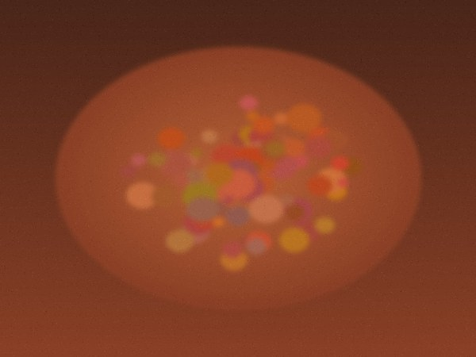
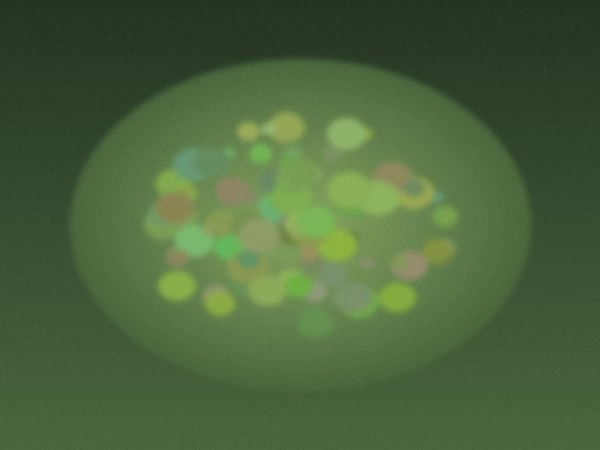
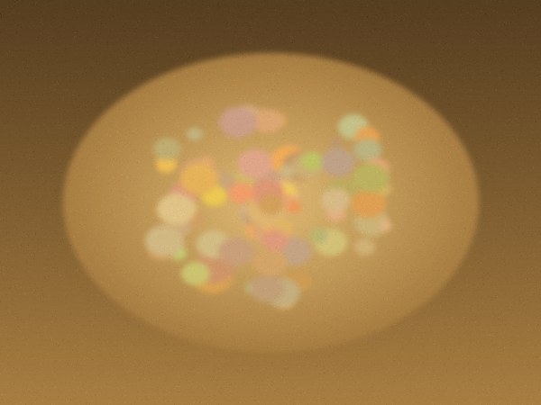
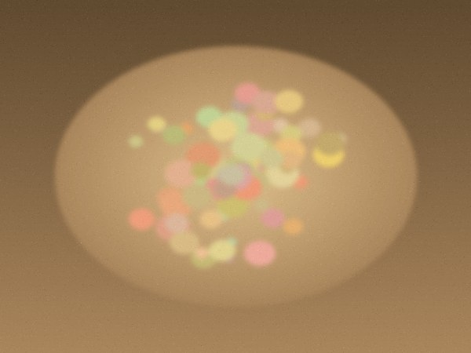

日
坤坤食帖
今日 · 第 296 帖
寻
食帖
灶火正旺 · 今日
今天吃什么
12
道菜 · 现点现炒
写
菜牌

今日灶火
红烧肉
全部
硬菜
时蔬
汤水
主食
全部菜品
12 道
01
红烧肉
五花三层，慢火收汁
硬菜
家常
想吃

02
清炒时蔬
当季青菜，蒜香起锅
清淡
想吃

03
老火例汤
筒骨玉米，煲足三小时
汤水
想吃

04
葱油拌面
手擀面，葱油现熬
主食
想吃
到底了
首页
留言
档案
3
去落单
首页 · 宣纸
· 刊头压成一行 / 单层 Dock
月
坤坤食帖
今日 · 第 296 帖
寻
食帖
灶火正旺 · 今日
今天吃什么
12
道菜 · 现点现炒
写
菜牌
今日灶火
红烧肉
全部
硬菜
时蔬
汤水
主食
全部菜品
12 道
01
红烧肉
五花三层，慢火收汁
硬菜
家常
想吃
02
清炒时蔬
当季青菜，蒜香起锅
清淡
想吃
03
老火例汤
筒骨玉米，煲足三小时
汤水
想吃
04
葱油拌面
手擀面，葱油现熬
主食
想吃
到底了
首页
留言
档案
3
去落单
首页 · 墨夜
· 同一套结构变量
今日 · 一菜
红烧肉
掌勺 · 坤叔
坤
硬菜
家常
简介
选五花三层，先煸后炖。冰糖炒色，黄酒代水，小火慢煨一小时，收汁到能挂住勺背。入口先甜后咸，肥而不腻。
食材
五花肉 800g
冰糖 40g
黄酒 300ml
生抽 2 勺
做法
01
肉切三厘米见方，冷水下锅焯净血沫，捞出擦干。
02
热锅下冰糖炒至枣红，下肉翻匀，加黄酒与生抽，小火一小时。
留言
2
坤
发送
坤
收汁这一步真的关键，挂勺背的浓度刚好。
3 小时前
坤
照这个方子做了一次，家里人说比外面馆子强。
昨天
菜之一页
· 沉浸头图 / 横排分区
档案
厨师 · 记录每一道拿手菜
档
身份卡
坤
勺
阿坤
厨师
·
点一下改昵称
12
菜
菜品
8
签
标签
墨夜模式
日间宣纸 / 灯下墨夜
减弱动效
去掉位移与弹性，只保留淡入
我的食单
报餐单与制作状态
灶房
3
飞帖与在灶单
海报墙
首页顶部轮播图片
坤
坤坤食帖 · 云开发版
首页
留言
档案
0
点菜单
档案
· 语义化开关 / 墨夜主题